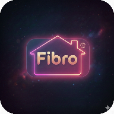

FibroSetup
Maak Fibro klaar op dit apparaat
Je account is klaar. Voeg hieronder de twee handige links toe.
Je kunt dit overslaan en meteen verdergaan.
Dit setupscherm maakt geen nieuwe sleutel aan.

Je account is klaar. Voeg hieronder de twee handige links toe.
Je kunt dit overslaan en meteen verdergaan.
Dit setupscherm maakt geen nieuwe sleutel aan.